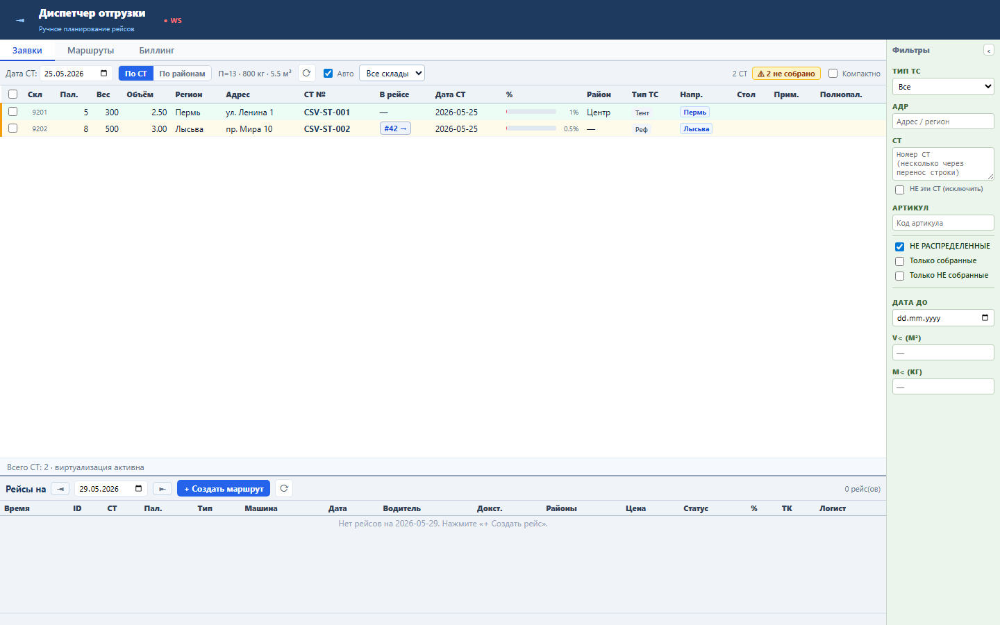
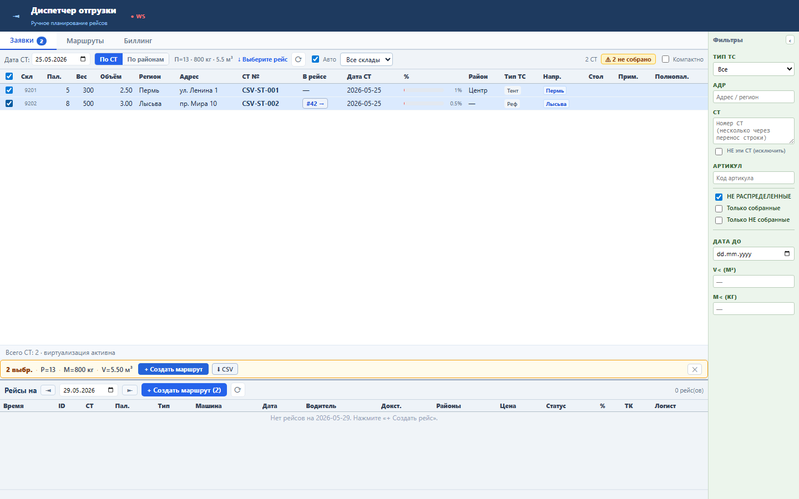

Блок нужен для быстрой передачи выбранных заявок во внешний разбор, сверку или ручной маршрутный файл.
CSV строится на клиенте из текущего множества выделенных СТ: номер, адрес, регион, район, паллеты, вес, объем, готовность, тип ТС и рейс. Файл UTF-8 с BOM и разделителем ;.
CSV скачивает файл selected-sts-YYYY-MM-DD.csv.Sprint 54 закрыт functional, load и UI smoke проверками.


СТ №;Адрес;Регион;Район;Паллет;Вес кг;Объём м³;% сборки;Тип ТС;Рейс CSV-ST-001;ул. Ленина 1;Пермь;Центр;5;300;2.50;100%;Тент; CSV-ST-002;пр. Мира 10;Лысьва;;8;500;3.00;50%;Реф;#42 ИТОГО;;;;13;800;;;;